Cross-Correlation¶
Steps:
Load CONUS dataset (5D, 14D temporal resolution)
Subset Area of Interest (AOI)
Interpolate the NANs
Smooth the Signal
Calculate the anomalies (remove the climatology)
Package Preamble¶
import sys
from pyprojroot import here
# spyder up to find the root
root = here(project_files=[".here"])
# append to path
sys.path.append(str(root))
sys.path.append("/home/emmanuel/code/isp_data")
# standard libraries
import geopandas as gpd
import xarray as xr
import numpy as np
xr.set_options(display_style="html")
# Helper Functions
from isp_data.drought.load import DroughtData
from isp_data.polygons import get_local_polygons
from isp_data.viz import plot_mean_time
from isp_data.esdc.subset import select_pixel, subset_bounding_box
from isp_data.esdc.decomposition import calculate_monthly_mean
# MATPLOTLIB Settings
import matplotlib as mpl
import matplotlib.pyplot as plt
%matplotlib inline
%config InlineBackend.figure_format = 'retina'
# SEABORN SETTINGS
import seaborn as sns
sns.set_context(context='poster',font_scale=0.7)
%load_ext autoreload
%autoreload 2
Preprocessing Steps¶
Load Drought Data
Select Area of Interest
Interpolate the NANs
Smooth the Signal
Remove Climatology
Helper Plot Functions¶
def plot_ts(ds):
fig, ax = plt.subplots(nrows=4, figsize=(10,10))
ds.to_dataframe()[["VOD"]].plot(ax=ax[0], color="Blue")
ds.to_dataframe()[["LST"]].plot(ax=ax[1], color="Red")
ds.to_dataframe()[["NDVI"]].plot(ax=ax[2], color="Green")
ds.to_dataframe()[["SM"]].plot(ax=ax[3], color="Red")
plt.tight_layout()
plt.show()
from isp_data.esdc.subset import Pixel, BoundingBox
import rioxarray
# ============================
# 1 - Load Drought Data
# ============================
region = 'conus'
sampling = '5D'
drought_data = DroughtData()
drought_cube = drought_data.load_data(region, sampling)
# ============================
# 2 - Select Area of Interest
# ============================
pixel = Pixel(lat=37, lon=-121)
# drought_cube.rio.clip_box(
# minlat=36.34,
# maxlat=50.03,
# minlon=-104.52,
# maxlon=-79.96,
# )
bounding_box = BoundingBox(36.34, 50.03, -104.52, -79.96)
# drought_cube = drought_cube.sel(
# {"lat":slice(bounding_box.lat_min, bounding_box.lat_max),
# "lon":slice(bounding_box.lon_min, bounding_box.lon_max)},
# )
demo_subset = subset_bounding_box(drought_cube, bounding_box)
demo_subset
<xarray.Dataset>
Dimensions: (lat: 251, lon: 480, time: 526)
Coordinates:
* time (time) datetime64[ns] 2010-05-30 2010-06-01 ... 2015-12-30
* lat (lat) float64 36.39 36.44 36.49 36.54 ... 48.74 48.79 48.84 48.89
* lon (lon) float64 -104.5 -104.4 -104.4 -104.3 ... -80.64 -80.59 -80.54
Data variables:
SMADI (lat, lon, time) float64 ...
LST (lat, lon, time) float64 ...
NDVI (lat, lon, time) float64 ...
VOD (lat, lon, time) float64 ...
SM (lat, lon, time) float64 ...xarray.Dataset
- lat: 251
- lon: 480
- time: 526
- time(time)datetime64[ns]2010-05-30 ... 2015-12-30
array(['2010-05-30T00:00:00.000000000', '2010-06-01T00:00:00.000000000', '2010-06-04T00:00:00.000000000', ..., '2015-12-22T00:00:00.000000000', '2015-12-25T00:00:00.000000000', '2015-12-30T00:00:00.000000000'], dtype='datetime64[ns]') - lat(lat)float6436.39 36.44 36.49 ... 48.84 48.89
array([36.385107, 36.435121, 36.485135, ..., 48.788552, 48.838566, 48.88858 ])
- lon(lon)float64-104.5 -104.4 ... -80.59 -80.54
array([-104.489512, -104.439505, -104.389499, ..., -80.636199, -80.586193, -80.536186])
- SMADI(lat, lon, time)float64...
[63372480 values with dtype=float64]
- LST(lat, lon, time)float64...
[63372480 values with dtype=float64]
- NDVI(lat, lon, time)float64...
[63372480 values with dtype=float64]
- VOD(lat, lon, time)float64...
[63372480 values with dtype=float64]
- SM(lat, lon, time)float64...
[63372480 values with dtype=float64]
# plot
plot_mean_time(demo_subset.VOD, cmap="viridis", title="Vegetation Optical Depth", );
/home/emmanuel/.conda/envs/isp_data/lib/python3.9/site-packages/cartopy/io/__init__.py:260: DownloadWarning: Downloading: https://naciscdn.org/naturalearth/10m/physical/ne_10m_coastline.zip
warnings.warn('Downloading: {}'.format(url), DownloadWarning)
plot_ts(demo_subset.mean(dim=["lat", "lon"]))
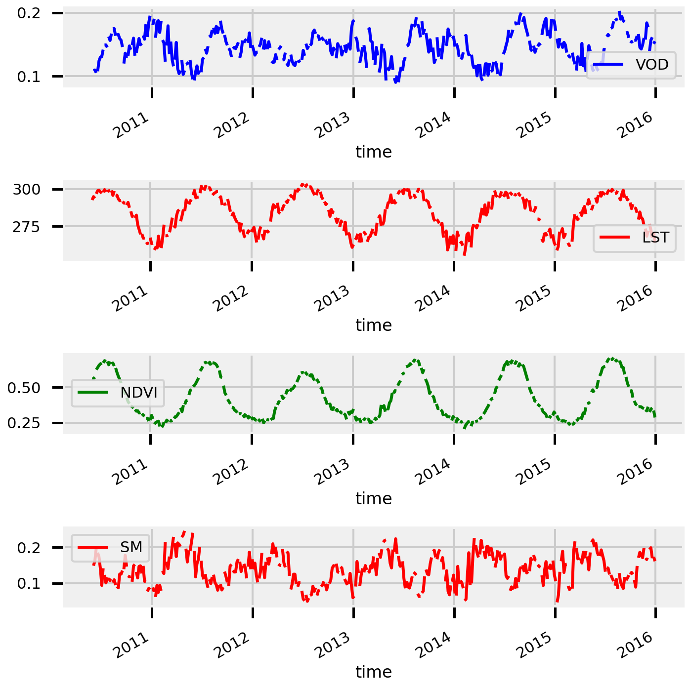
Interpolate NANs¶
%%time
# ======================
# 3 - Interpolate NANs
# ======================
# interpolation arguments
interp_dim = 'time'
method = 'linear'
# do interpolation
demo_subset_interp = demo_subset.copy()
demo_subset_interp["VOD"] = demo_subset.VOD.interpolate_na(
dim=interp_dim,
method=method
)
demo_subset_interp["LST"] = demo_subset.LST.interpolate_na(
dim=interp_dim,
method=method
)
demo_subset_interp["SM"] = demo_subset.SM.interpolate_na(
dim=interp_dim,
method=method
)
demo_subset_interp["NDVI"] = demo_subset.NDVI.interpolate_na(
dim=interp_dim,
method=method
)
demo_subset_interp
CPU times: user 13.6 s, sys: 828 ms, total: 14.4 s
Wall time: 14.4 s
<xarray.Dataset>
Dimensions: (lat: 251, lon: 480, time: 526)
Coordinates:
* time (time) datetime64[ns] 2010-05-30 2010-06-01 ... 2015-12-30
* lat (lat) float64 36.39 36.44 36.49 36.54 ... 48.74 48.79 48.84 48.89
* lon (lon) float64 -104.5 -104.4 -104.4 -104.3 ... -80.64 -80.59 -80.54
Data variables:
SMADI (lat, lon, time) float64 ...
LST (lat, lon, time) float64 nan nan 293.8 312.8 ... nan nan nan nan
NDVI (lat, lon, time) float64 nan nan 0.3411 0.348 ... nan nan nan nan
VOD (lat, lon, time) float64 -0.02358 -0.01236 0.00447 ... nan nan nan
SM (lat, lon, time) float64 0.01119 0.004267 -0.006119 ... nan nan nanxarray.Dataset
- lat: 251
- lon: 480
- time: 526
- time(time)datetime64[ns]2010-05-30 ... 2015-12-30
array(['2010-05-30T00:00:00.000000000', '2010-06-01T00:00:00.000000000', '2010-06-04T00:00:00.000000000', ..., '2015-12-22T00:00:00.000000000', '2015-12-25T00:00:00.000000000', '2015-12-30T00:00:00.000000000'], dtype='datetime64[ns]') - lat(lat)float6436.39 36.44 36.49 ... 48.84 48.89
array([36.385107, 36.435121, 36.485135, ..., 48.788552, 48.838566, 48.88858 ])
- lon(lon)float64-104.5 -104.4 ... -80.59 -80.54
array([-104.489512, -104.439505, -104.389499, ..., -80.636199, -80.586193, -80.536186])
- SMADI(lat, lon, time)float64...
[63372480 values with dtype=float64]
- LST(lat, lon, time)float64nan nan 293.8 312.8 ... nan nan nan
array([[[ nan, nan, 293.82333374, ..., 273.58039856, 276.65000153, 271.06667074], [ nan, nan, 293.67332967, ..., 272.8368042 , 276.27000427, 270.31332397], [ nan, nan, 299.56332397, ..., 274.11140564, 277.55750275, 269.79999797], ..., [ nan, nan, nan, ..., nan, nan, nan], [ nan, nan, nan, ..., nan, nan, nan], [ nan, nan, nan, ..., nan, nan, nan]], [[ nan, nan, 293.80999756, ..., 273.95360229, 276.39500427, 271.68332926], [ nan, nan, 294.90666707, ..., 274.15540527, 276.49751282, 270.53667196], [ nan, nan, 300.40000407, ..., 273.26939148, 273.59249115, 270.33999634], ... [ nan, nan, nan, ..., nan, nan, nan], [ nan, nan, nan, ..., nan, nan, nan], [ nan, nan, nan, ..., nan, nan, nan]], [[ nan, nan, 284.68666585, ..., 262.00733643, 259.15333557, 253.38200073], [ nan, nan, 284.85667928, ..., 261.53599854, 259.58000183, 253.19399109], [ nan, nan, 285.39666748, ..., 262.20200195, 261.1700058 , 254.17000122], ..., [ nan, nan, nan, ..., nan, nan, nan], [ nan, nan, nan, ..., nan, nan, nan], [ nan, nan, nan, ..., nan, nan, nan]]]) - NDVI(lat, lon, time)float64nan nan 0.3411 ... nan nan nan
array([[[ nan, nan, 0.34107751, ..., 0.16977137, 0.1739723 , nan], [ nan, nan, 0.33372027, ..., 0.17870345, 0.18722394, nan], [ nan, nan, 0.31047133, ..., 0.18949937, 0.2016041 , nan], ..., [ nan, nan, nan, ..., nan, nan, nan], [ nan, nan, nan, ..., nan, nan, nan], [ nan, nan, nan, ..., nan, nan, nan]], [[ nan, nan, 0.31996179, ..., 0.16978511, 0.17370003, nan], [ nan, nan, 0.36106431, ..., 0.18194536, 0.19217801, nan], [ nan, nan, 0.30557105, ..., 0.17871181, 0.19021074, nan], ... [ nan, nan, nan, ..., nan, nan, nan], [ nan, nan, nan, ..., nan, nan, nan], [ nan, nan, nan, ..., nan, nan, nan]], [[ nan, nan, nan, ..., nan, nan, nan], [ nan, nan, nan, ..., nan, nan, nan], [ nan, nan, 0.4001168 , ..., nan, nan, nan], ..., [ nan, nan, nan, ..., nan, nan, nan], [ nan, nan, nan, ..., nan, nan, nan], [ nan, nan, nan, ..., nan, nan, nan]]]) - VOD(lat, lon, time)float64-0.02358 -0.01236 ... nan nan
array([[[-0.02357651, -0.01235806, 0.00446961, ..., 0.11434469, 0.14371546, nan], [-0.02985619, -0.02038971, -0.00618998, ..., 0.10671425, 0.13638354, nan], [-0.03377146, -0.02605818, -0.01448826, ..., 0.10166469, 0.13075991, nan], ..., [ nan, nan, nan, ..., nan, nan, nan], [ nan, nan, nan, ..., nan, nan, nan], [ nan, nan, nan, ..., nan, nan, nan]], [[ 0.00201862, 0.00612671, 0.01228884, ..., 0.12769283, 0.15983437, nan], [-0.00646989, -0.00355071, 0.00082804, ..., 0.1191745 , 0.15113508, nan], [-0.01124999, -0.00986275, -0.00778188, ..., 0.11354942, 0.14496088, nan], ... [ nan, nan, nan, ..., nan, nan, nan], [ nan, nan, nan, ..., nan, nan, nan], [ nan, nan, nan, ..., nan, nan, nan]], [[-0.06684027, -0.03550183, 0.01150582, ..., 0.15436469, 0.19153746, 0.04535177], [-0.06903916, -0.03902501, 0.00599621, ..., 0.15455901, 0.19195089, 0.04589412], [-0.06894558, -0.04091867, 0.0011217 , ..., 0.15390378, 0.19048146, 0.04544104], ..., [ nan, nan, nan, ..., nan, nan, nan], [ nan, nan, nan, ..., nan, nan, nan], [ nan, nan, nan, ..., nan, nan, nan]]]) - SM(lat, lon, time)float640.01119 0.004267 ... nan nan
array([[[ 0.0111903 , 0.00426672, -0.00611864, ..., 0.10061522, 0.0860758 , nan], [ 0.01120677, 0.00402469, -0.00674842, ..., 0.10050908, 0.08549139, nan], [ 0.01125738, 0.00394687, -0.00701889, ..., 0.10138593, 0.08802869, nan], ..., [ nan, nan, nan, ..., nan, nan, nan], [ nan, nan, nan, ..., nan, nan, nan], [ nan, nan, nan, ..., nan, nan, nan]], [[ 0.01598368, 0.00703619, -0.00638505, ..., 0.10438417, 0.08991721, nan], [ 0.01588444, 0.00676019, -0.00692619, ..., 0.10521971, 0.09031855, nan], [ 0.01606311, 0.00678539, -0.00713119, ..., 0.10682027, 0.09408719, nan], ... [ nan, nan, nan, ..., nan, nan, nan], [ nan, nan, nan, ..., nan, nan, nan], [ nan, nan, nan, ..., nan, nan, nan]], [[ 0.14039181, 0.15122937, 0.16748571, ..., 0.02211159, 0.01981209, 0.02334765], [ 0.13777573, 0.14829202, 0.16406647, ..., 0.0222313 , 0.01993635, 0.0234852 ], [ 0.13622742, 0.14601155, 0.16068774, ..., 0.02227751, 0.01975953, 0.02358021], ..., [ nan, nan, nan, ..., nan, nan, nan], [ nan, nan, nan, ..., nan, nan, nan], [ nan, nan, nan, ..., nan, nan, nan]]])
demo_subset_interp.ffill(dim="time")
---------------------------------------------------------------------------
ModuleNotFoundError Traceback (most recent call last)
<ipython-input-115-609aa7670981> in <module>
----> 1 demo_subset_interp.ffill(dim="time")
~/.conda/envs/isp_data/lib/python3.9/site-packages/xarray/core/dataset.py in ffill(self, dim, limit)
4580 from .missing import _apply_over_vars_with_dim, ffill
4581
-> 4582 new = _apply_over_vars_with_dim(ffill, self, dim=dim, limit=limit)
4583 return new
4584
~/.conda/envs/isp_data/lib/python3.9/site-packages/xarray/core/missing.py in _apply_over_vars_with_dim(func, self, dim, **kwargs)
202 for name, var in self.data_vars.items():
203 if dim in var.dims:
--> 204 ds[name] = func(var, dim=dim, **kwargs)
205 else:
206 ds[name] = var
~/.conda/envs/isp_data/lib/python3.9/site-packages/xarray/core/missing.py in ffill(arr, dim, limit)
404 def ffill(arr, dim=None, limit=None):
405 """forward fill missing values"""
--> 406 import bottleneck as bn
407
408 axis = arr.get_axis_num(dim)
ModuleNotFoundError: No module named 'bottleneck'
plot_ts(demo_subset_interp.mean(dim=["lat", "lon"]))
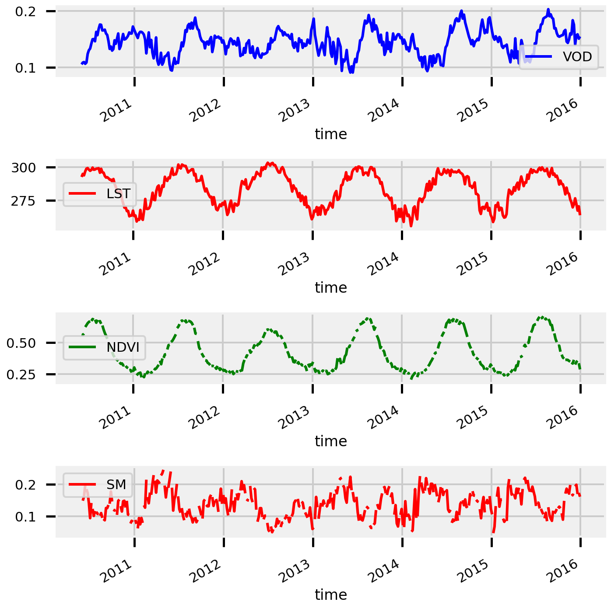
%%time
# ======================
# 4 - Smooth Signal
# ======================
# smoothing parameters
window_length = 3
center = True
# apply savgol filter
demo_subset_interp_rolling = demo_subset_interp.rolling(
time=window_length,
center=center,
).mean()
demo_subset_interp_rolling
CPU times: user 20.9 s, sys: 5.11 s, total: 26 s
Wall time: 26 s
<xarray.Dataset>
Dimensions: (lat: 251, lon: 480, time: 526)
Coordinates:
* time (time) datetime64[ns] 2010-05-30 2010-06-01 ... 2015-12-30
* lat (lat) float64 36.39 36.44 36.49 36.54 ... 48.74 48.79 48.84 48.89
* lon (lon) float64 -104.5 -104.4 -104.4 -104.3 ... -80.64 -80.59 -80.54
Data variables:
SMADI (lat, lon, time) float64 nan nan nan nan nan ... nan nan nan nan
LST (lat, lon, time) float64 nan nan nan 303.7 ... nan nan nan nan
NDVI (lat, lon, time) float64 nan nan nan 0.3437 nan ... nan nan nan nan
VOD (lat, lon, time) float64 nan -0.01049 0.03474 ... nan nan nan
SM (lat, lon, time) float64 nan nan nan 0.007536 ... nan nan nan nanxarray.Dataset
- lat: 251
- lon: 480
- time: 526
- time(time)datetime64[ns]2010-05-30 ... 2015-12-30
array(['2010-05-30T00:00:00.000000000', '2010-06-01T00:00:00.000000000', '2010-06-04T00:00:00.000000000', ..., '2015-12-22T00:00:00.000000000', '2015-12-25T00:00:00.000000000', '2015-12-30T00:00:00.000000000'], dtype='datetime64[ns]') - lat(lat)float6436.39 36.44 36.49 ... 48.84 48.89
array([36.385107, 36.435121, 36.485135, ..., 48.788552, 48.838566, 48.88858 ])
- lon(lon)float64-104.5 -104.4 ... -80.59 -80.54
array([-104.489512, -104.439505, -104.389499, ..., -80.636199, -80.586193, -80.536186])
- SMADI(lat, lon, time)float64nan nan nan nan ... nan nan nan nan
array([[[nan, nan, nan, ..., nan, nan, nan], [nan, nan, nan, ..., nan, nan, nan], [nan, nan, nan, ..., nan, nan, nan], ..., [nan, nan, nan, ..., nan, nan, nan], [nan, nan, nan, ..., nan, nan, nan], [nan, nan, nan, ..., nan, nan, nan]], [[nan, nan, nan, ..., nan, nan, nan], [nan, nan, nan, ..., nan, nan, nan], [nan, nan, nan, ..., nan, nan, nan], ..., [nan, nan, nan, ..., nan, nan, nan], [nan, nan, nan, ..., nan, nan, nan], [nan, nan, nan, ..., nan, nan, nan]], [[nan, nan, nan, ..., nan, nan, nan], [nan, nan, nan, ..., nan, nan, nan], [nan, nan, nan, ..., nan, nan, nan], ..., ... ..., [nan, nan, nan, ..., nan, nan, nan], [nan, nan, nan, ..., nan, nan, nan], [nan, nan, nan, ..., nan, nan, nan]], [[nan, nan, nan, ..., nan, nan, nan], [nan, nan, nan, ..., nan, nan, nan], [nan, nan, nan, ..., nan, nan, nan], ..., [nan, nan, nan, ..., nan, nan, nan], [nan, nan, nan, ..., nan, nan, nan], [nan, nan, nan, ..., nan, nan, nan]], [[nan, nan, nan, ..., nan, nan, nan], [nan, nan, nan, ..., nan, nan, nan], [nan, nan, nan, ..., nan, nan, nan], ..., [nan, nan, nan, ..., nan, nan, nan], [nan, nan, nan, ..., nan, nan, nan], [nan, nan, nan, ..., nan, nan, nan]]]) - LST(lat, lon, time)float64nan nan nan 303.7 ... nan nan nan
array([[[ nan, nan, nan, ..., 273.92146556, 273.76569027, nan], [ nan, nan, nan, ..., 273.21827087, 273.14004415, nan], [ nan, nan, nan, ..., 274.49430532, 273.82296878, nan], ..., [ nan, nan, nan, ..., nan, nan, nan], [ nan, nan, nan, ..., nan, nan, nan], [ nan, nan, nan, ..., nan, nan, nan]], [[ nan, nan, nan, ..., 274.22486918, 274.01064528, nan], [ nan, nan, nan, ..., 274.41563944, 273.72986335, nan], [ nan, nan, nan, ..., 273.30529144, 272.40062632, nan], ... [ nan, nan, nan, ..., nan, nan, nan], [ nan, nan, nan, ..., nan, nan, nan], [ nan, nan, nan, ..., nan, nan, nan]], [[ nan, nan, nan, ..., 261.69022522, 258.18089091, nan], [ nan, nan, nan, ..., 261.31866557, 258.10333049, nan], [ nan, nan, nan, ..., 262.08733571, 259.18066966, nan], ..., [ nan, nan, nan, ..., nan, nan, nan], [ nan, nan, nan, ..., nan, nan, nan], [ nan, nan, nan, ..., nan, nan, nan]]]) - NDVI(lat, lon, time)float64nan nan nan 0.3437 ... nan nan nan
array([[[nan, nan, nan, ..., nan, nan, nan], [nan, nan, nan, ..., nan, nan, nan], [nan, nan, nan, ..., nan, nan, nan], ..., [nan, nan, nan, ..., nan, nan, nan], [nan, nan, nan, ..., nan, nan, nan], [nan, nan, nan, ..., nan, nan, nan]], [[nan, nan, nan, ..., nan, nan, nan], [nan, nan, nan, ..., nan, nan, nan], [nan, nan, nan, ..., nan, nan, nan], ..., [nan, nan, nan, ..., nan, nan, nan], [nan, nan, nan, ..., nan, nan, nan], [nan, nan, nan, ..., nan, nan, nan]], [[nan, nan, nan, ..., nan, nan, nan], [nan, nan, nan, ..., nan, nan, nan], [nan, nan, nan, ..., nan, nan, nan], ..., ... ..., [nan, nan, nan, ..., nan, nan, nan], [nan, nan, nan, ..., nan, nan, nan], [nan, nan, nan, ..., nan, nan, nan]], [[nan, nan, nan, ..., nan, nan, nan], [nan, nan, nan, ..., nan, nan, nan], [nan, nan, nan, ..., nan, nan, nan], ..., [nan, nan, nan, ..., nan, nan, nan], [nan, nan, nan, ..., nan, nan, nan], [nan, nan, nan, ..., nan, nan, nan]], [[nan, nan, nan, ..., nan, nan, nan], [nan, nan, nan, ..., nan, nan, nan], [nan, nan, nan, ..., nan, nan, nan], ..., [nan, nan, nan, ..., nan, nan, nan], [nan, nan, nan, ..., nan, nan, nan], [nan, nan, nan, ..., nan, nan, nan]]]) - VOD(lat, lon, time)float64nan -0.01049 0.03474 ... nan nan
array([[[ nan, -0.01048832, 0.03474003, ..., 0.11760811, nan, nan], [ nan, -0.01881196, 0.02423516, ..., 0.11001083, nan, nan], [ nan, -0.02477263, 0.01487345, ..., 0.10489749, nan, nan], ..., [ nan, nan, nan, ..., nan, nan, nan], [ nan, nan, nan, ..., nan, nan, nan], [ nan, nan, nan, ..., nan, nan, nan]], [[ nan, 0.00681139, 0.05073513, ..., 0.13126412, nan, nan], [ nan, -0.00306419, 0.03953355, ..., 0.12272568, nan, nan], [ nan, -0.00963154, 0.0294984 , ..., 0.11703958, nan, nan], ... [ nan, nan, nan, ..., nan, nan, nan], [ nan, nan, nan, ..., nan, nan, nan], [ nan, nan, nan, ..., nan, nan, nan]], [[ nan, -0.03027876, -0.01419487, ..., 0.158495 , 0.13041798, nan], [ nan, -0.03402265, -0.01630186, ..., 0.15871367, 0.13080134, nan], [ nan, -0.03624752, -0.01813529, ..., 0.15796797, 0.12994209, nan], ..., [ nan, nan, nan, ..., nan, nan, nan], [ nan, nan, nan, ..., nan, nan, nan], [ nan, nan, nan, ..., nan, nan, nan]]]) - SM(lat, lon, time)float64nan nan nan ... nan nan nan
array([[[nan, nan, nan, ..., nan, nan, nan], [nan, nan, nan, ..., nan, nan, nan], [nan, nan, nan, ..., nan, nan, nan], ..., [nan, nan, nan, ..., nan, nan, nan], [nan, nan, nan, ..., nan, nan, nan], [nan, nan, nan, ..., nan, nan, nan]], [[nan, nan, nan, ..., nan, nan, nan], [nan, nan, nan, ..., nan, nan, nan], [nan, nan, nan, ..., nan, nan, nan], ..., [nan, nan, nan, ..., nan, nan, nan], [nan, nan, nan, ..., nan, nan, nan], [nan, nan, nan, ..., nan, nan, nan]], [[nan, nan, nan, ..., nan, nan, nan], [nan, nan, nan, ..., nan, nan, nan], [nan, nan, nan, ..., nan, nan, nan], ..., ... ..., [nan, nan, nan, ..., nan, nan, nan], [nan, nan, nan, ..., nan, nan, nan], [nan, nan, nan, ..., nan, nan, nan]], [[nan, nan, nan, ..., nan, nan, nan], [nan, nan, nan, ..., nan, nan, nan], [nan, nan, nan, ..., nan, nan, nan], ..., [nan, nan, nan, ..., nan, nan, nan], [nan, nan, nan, ..., nan, nan, nan], [nan, nan, nan, ..., nan, nan, nan]], [[nan, nan, nan, ..., nan, nan, nan], [nan, nan, nan, ..., nan, nan, nan], [nan, nan, nan, ..., nan, nan, nan], ..., [nan, nan, nan, ..., nan, nan, nan], [nan, nan, nan, ..., nan, nan, nan], [nan, nan, nan, ..., nan, nan, nan]]])
# plot_ts(demo_subset_interp.mean(dim=["lat", "lon"]))
%%time
# =======================
# 5 - Remove Climatology
# =======================
# calculate the climatology
demo_subset_climatology_mean = calculate_monthly_mean(demo_subset_interp_rolling)
# remove climatology
dataset_anomalies = demo_subset_interp_rolling.groupby('time.month') - demo_subset_climatology_mean
dataset_anomalies
CPU times: user 5.94 s, sys: 3.3 s, total: 9.24 s
Wall time: 9.25 s
<xarray.Dataset>
Dimensions: (lat: 251, lon: 480, time: 526)
Coordinates:
* time (time) datetime64[ns] 2010-05-30 2010-06-01 ... 2015-12-30
* lat (lat) float64 36.39 36.44 36.49 36.54 ... 48.74 48.79 48.84 48.89
* lon (lon) float64 -104.5 -104.4 -104.4 -104.3 ... -80.64 -80.59 -80.54
month (time) int64 5 6 6 6 6 6 6 6 6 7 ... 11 11 12 12 12 12 12 12 12 12
Data variables:
SMADI (lat, lon, time) float64 nan nan nan nan nan ... nan nan nan nan
LST (lat, lon, time) float64 nan nan nan -0.6003 ... nan nan nan nan
NDVI (lat, lon, time) float64 nan nan nan 0.07998 ... nan nan nan nan
VOD (lat, lon, time) float64 nan -0.04006 0.005172 ... nan nan nan
SM (lat, lon, time) float64 nan -0.04644 -0.04247 ... nan nan nanxarray.Dataset
- lat: 251
- lon: 480
- time: 526
- time(time)datetime64[ns]2010-05-30 ... 2015-12-30
array(['2010-05-30T00:00:00.000000000', '2010-06-01T00:00:00.000000000', '2010-06-04T00:00:00.000000000', ..., '2015-12-22T00:00:00.000000000', '2015-12-25T00:00:00.000000000', '2015-12-30T00:00:00.000000000'], dtype='datetime64[ns]') - lat(lat)float6436.39 36.44 36.49 ... 48.84 48.89
array([36.385107, 36.435121, 36.485135, ..., 48.788552, 48.838566, 48.88858 ])
- lon(lon)float64-104.5 -104.4 ... -80.59 -80.54
array([-104.489512, -104.439505, -104.389499, ..., -80.636199, -80.586193, -80.536186]) - month(time)int645 6 6 6 6 6 6 ... 12 12 12 12 12 12
array([ 5, 6, 6, 6, 6, 6, 6, 6, 6, 7, 7, 7, 7, 7, 7, 7, 7, 8, 8, 8, 8, 8, 8, 8, 8, 9, 9, 9, 9, 9, 9, 9, 10, 10, 10, 10, 10, 10, 10, 10, 11, 11, 11, 11, 11, 11, 11, 11, 12, 12, 12, 12, 12, 12, 12, 12, 12, 1, 1, 1, 1, 1, 1, 1, 2, 2, 2, 2, 2, 2, 2, 3, 3, 3, 3, 3, 3, 3, 3, 3, 4, 4, 4, 4, 4, 4, 4, 5, 5, 5, 5, 5, 5, 5, 5, 5, 6, 6, 6, 6, 6, 6, 6, 7, 7, 7, 7, 7, 7, 7, 7, 8, 8, 8, 8, 8, 8, 8, 9, 9, 9, 9, 9, 9, 9, 9, 10, 10, 10, 10, 10, 10, 10, 10, 11, 11, 11, 11, 11, 11, 11, 11, 12, 12, 12, 12, 12, 12, 12, 12, 12, 1, 1, 1, 1, 1, 1, 1, 2, 2, 2, 2, 2, 2, 2, 2, 3, 3, 3, 3, 3, 3, 3, 4, 4, 4, 4, 4, 4, 4, 4, 5, 5, 5, 5, 5, 5, 5, 5, 6, 6, 6, 6, 6, 6, 6, 6, 7, 7, 7, 7, 7, 7, 7, 7, 8, 8, 8, 8, 8, 8, 8, 9, 9, 9, 9, 9, 9, 9, 9, 10, 10, 10, 10, 10, 10, 10, 10, 10, 11, 11, 11, 11, 11, 11, 11, 11, 12, 12, 12, 12, 12, 12, 12, 1, 1, 1, 1, 1, 1, 1, 1, 2, 2, 2, 2, 2, 2, 2, 2, 3, 3, 3, 3, 3, 3, 3, 4, 4, 4, 4, 4, 4, 4, 4, 4, 5, 5, 5, 5, 5, 5, 5, 6, 6, 6, 6, 6, 6, 6, 6, 7, 7, 7, 7, 7, 7, 7, 8, 8, 8, 8, 8, 8, 8, 8, 9, 9, 9, 9, 9, 9, 9, 9, 10, 10, 10, 10, 10, 10, 10, 10, 10, 11, 11, 11, 11, 11, 11, 11, 11, 12, 12, 12, 12, 12, 12, 12, 1, 1, 1, 1, 1, 1, 1, 1, 2, 2, 2, 2, 2, 2, 2, 3, 3, 3, 3, 3, 3, 3, 3, 4, 4, 4, 4, 4, 4, 4, 4, 5, 5, 5, 5, 5, 5, 5, 5, 6, 6, 6, 6, 6, 6, 6, 6, 7, 7, 7, 7, 7, 7, 7, 8, 8, 8, 8, 8, 8, 8, 8, 9, 9, 9, 9, 9, 9, 9, 9, 10, 10, 10, 10, 10, 10, 10, 10, 10, 11, 11, 11, 11, 11, 11, 11, 12, 12, 12, 12, 12, 12, 12, 12, 1, 1, 1, 1, 1, 1, 1, 1, 2, 2, 2, 2, 2, 2, 2, 3, 3, 3, 3, 3, 3, 3, 3, 3, 4, 4, 4, 4, 4, 4, 4, 5, 5, 5, 5, 5, 5, 5, 5, 6, 6, 6, 6, 6, 6, 6, 7, 7, 7, 7, 7, 7, 7, 7, 8, 8, 8, 8, 8, 8, 8, 8, 9, 9, 9, 9, 9, 9, 9, 9, 10, 10, 10, 10, 10, 10, 10, 10, 10, 11, 11, 11, 11, 11, 11, 11, 12, 12, 12, 12, 12, 12, 12, 12])
- SMADI(lat, lon, time)float64nan nan nan nan ... nan nan nan nan
array([[[nan, nan, nan, ..., nan, nan, nan], [nan, nan, nan, ..., nan, nan, nan], [nan, nan, nan, ..., nan, nan, nan], ..., [nan, nan, nan, ..., nan, nan, nan], [nan, nan, nan, ..., nan, nan, nan], [nan, nan, nan, ..., nan, nan, nan]], [[nan, nan, nan, ..., nan, nan, nan], [nan, nan, nan, ..., nan, nan, nan], [nan, nan, nan, ..., nan, nan, nan], ..., [nan, nan, nan, ..., nan, nan, nan], [nan, nan, nan, ..., nan, nan, nan], [nan, nan, nan, ..., nan, nan, nan]], [[nan, nan, nan, ..., nan, nan, nan], [nan, nan, nan, ..., nan, nan, nan], [nan, nan, nan, ..., nan, nan, nan], ..., ... ..., [nan, nan, nan, ..., nan, nan, nan], [nan, nan, nan, ..., nan, nan, nan], [nan, nan, nan, ..., nan, nan, nan]], [[nan, nan, nan, ..., nan, nan, nan], [nan, nan, nan, ..., nan, nan, nan], [nan, nan, nan, ..., nan, nan, nan], ..., [nan, nan, nan, ..., nan, nan, nan], [nan, nan, nan, ..., nan, nan, nan], [nan, nan, nan, ..., nan, nan, nan]], [[nan, nan, nan, ..., nan, nan, nan], [nan, nan, nan, ..., nan, nan, nan], [nan, nan, nan, ..., nan, nan, nan], ..., [nan, nan, nan, ..., nan, nan, nan], [nan, nan, nan, ..., nan, nan, nan], [nan, nan, nan, ..., nan, nan, nan]]]) - LST(lat, lon, time)float64nan nan nan -0.6003 ... nan nan nan
array([[[ nan, nan, nan, ..., 0.03101913, -0.12475616, nan], [ nan, nan, nan, ..., -0.96453597, -1.0427627 , nan], [ nan, nan, nan, ..., -0.15436757, -0.8257041 , nan], ..., [ nan, nan, nan, ..., nan, nan, nan], [ nan, nan, nan, ..., nan, nan, nan], [ nan, nan, nan, ..., nan, nan, nan]], [[ nan, nan, nan, ..., -0.18503299, -0.39925689, nan], [ nan, nan, nan, ..., -0.71518086, -1.40095695, nan], [ nan, nan, nan, ..., -0.33893624, -1.24360137, nan], ... [ nan, nan, nan, ..., nan, nan, nan], [ nan, nan, nan, ..., nan, nan, nan], [ nan, nan, nan, ..., nan, nan, nan]], [[ nan, nan, nan, ..., 0.84014224, -2.66919207, nan], [ nan, nan, nan, ..., 0.17830783, -3.03702725, nan], [ nan, nan, nan, ..., 0.21128878, -2.69537728, nan], ..., [ nan, nan, nan, ..., nan, nan, nan], [ nan, nan, nan, ..., nan, nan, nan], [ nan, nan, nan, ..., nan, nan, nan]]]) - NDVI(lat, lon, time)float64nan nan nan 0.07998 ... nan nan nan
array([[[ nan, nan, nan, ..., -0.0023668 , nan, nan], [ nan, nan, nan, ..., -0.0008779 , nan, nan], [ nan, nan, nan, ..., 0.01794311, nan, nan], ..., [ nan, nan, nan, ..., nan, nan, nan], [ nan, nan, nan, ..., nan, nan, nan], [ nan, nan, nan, ..., nan, nan, nan]], [[ nan, nan, nan, ..., -0.00158219, nan, nan], [ nan, nan, nan, ..., 0.00658374, nan, nan], [ nan, nan, nan, ..., 0.00630835, nan, nan], ... [ nan, nan, nan, ..., nan, nan, nan], [ nan, nan, nan, ..., nan, nan, nan], [ nan, nan, nan, ..., nan, nan, nan]], [[ nan, nan, nan, ..., nan, nan, nan], [ nan, nan, nan, ..., nan, nan, nan], [ nan, nan, nan, ..., nan, nan, nan], ..., [ nan, nan, nan, ..., nan, nan, nan], [ nan, nan, nan, ..., nan, nan, nan], [ nan, nan, nan, ..., nan, nan, nan]]]) - VOD(lat, lon, time)float64nan -0.04006 0.005172 ... nan nan
array([[[ nan, -0.04005678, 0.00517157, ..., 0.03875123, nan, nan], [ nan, -0.04083961, 0.00220751, ..., 0.03857872, nan, nan], [ nan, -0.04294306, -0.00329698, ..., 0.03401541, nan, nan], ..., [ nan, nan, nan, ..., nan, nan, nan], [ nan, nan, nan, ..., nan, nan, nan], [ nan, nan, nan, ..., nan, nan, nan]], [[ nan, -0.03377397, 0.01014977, ..., 0.04395867, nan, nan], [ nan, -0.03436097, 0.00823676, ..., 0.04415835, nan, nan], [ nan, -0.03593152, 0.00319842, ..., 0.03998416, nan, nan], ... [ nan, nan, nan, ..., nan, nan, nan], [ nan, nan, nan, ..., nan, nan, nan], [ nan, nan, nan, ..., nan, nan, nan]], [[ nan, -0.11449013, -0.09840625, ..., 0.04033201, 0.01225498, nan], [ nan, -0.1183495 , -0.10062871, ..., 0.0395422 , 0.01162987, nan], [ nan, -0.12069047, -0.10257824, ..., 0.03862631, 0.01060044, nan], ..., [ nan, nan, nan, ..., nan, nan, nan], [ nan, nan, nan, ..., nan, nan, nan], [ nan, nan, nan, ..., nan, nan, nan]]]) - SM(lat, lon, time)float64nan -0.04644 -0.04247 ... nan nan
array([[[ nan, -0.04643612, -0.04247464, ..., 0.02293136, nan, nan], [ nan, -0.04691833, -0.04501809, ..., 0.02065734, nan, nan], [ nan, -0.04810437, -0.04767021, ..., 0.02172116, nan, nan], ..., [ nan, nan, nan, ..., nan, nan, nan], [ nan, nan, nan, ..., nan, nan, nan], [ nan, nan, nan, ..., nan, nan, nan]], [[ nan, -0.04528422, -0.04173724, ..., 0.02777656, nan, nan], [ nan, -0.04588665, -0.04457436, ..., 0.02598587, nan, nan], [ nan, -0.04704239, -0.04737025, ..., 0.0275451 , nan, nan], ... [ nan, nan, nan, ..., nan, nan, nan], [ nan, nan, nan, ..., nan, nan, nan], [ nan, nan, nan, ..., nan, nan, nan]], [[ nan, -0.00301438, -0.00660173, ..., -0.0370004 , -0.03709938, nan], [ nan, -0.00744808, -0.01029894, ..., -0.0369361 , -0.03702812, nan], [ nan, -0.01170203, -0.0138552 , ..., -0.03650896, -0.03663428, nan], ..., [ nan, nan, nan, ..., nan, nan, nan], [ nan, nan, nan, ..., nan, nan, nan], [ nan, nan, nan, ..., nan, nan, nan]]])
demo_subset_interp_rolling.VOD
<xarray.Dataset>
Dimensions: (lat: 251, lon: 480, time: 526)
Coordinates:
* time (time) datetime64[ns] 2010-05-30 2010-06-01 ... 2015-12-30
* lat (lat) float64 36.39 36.44 36.49 36.54 ... 48.74 48.79 48.84 48.89
* lon (lon) float64 -104.5 -104.4 -104.4 -104.3 ... -80.64 -80.59 -80.54
Data variables:
SMADI (lat, lon, time) float64 nan nan nan nan nan ... nan nan nan nan
LST (lat, lon, time) float64 nan nan nan 303.7 ... nan nan nan nan
NDVI (lat, lon, time) float64 nan nan nan 0.3437 nan ... nan nan nan nan
VOD (lat, lon, time) float64 nan -0.01049 0.03474 ... nan nan nan
SM (lat, lon, time) float64 nan nan nan 0.007536 ... nan nan nan nanxarray.Dataset
- lat: 251
- lon: 480
- time: 526
- time(time)datetime64[ns]2010-05-30 ... 2015-12-30
array(['2010-05-30T00:00:00.000000000', '2010-06-01T00:00:00.000000000', '2010-06-04T00:00:00.000000000', ..., '2015-12-22T00:00:00.000000000', '2015-12-25T00:00:00.000000000', '2015-12-30T00:00:00.000000000'], dtype='datetime64[ns]') - lat(lat)float6436.39 36.44 36.49 ... 48.84 48.89
array([36.385107, 36.435121, 36.485135, ..., 48.788552, 48.838566, 48.88858 ])
- lon(lon)float64-104.5 -104.4 ... -80.59 -80.54
array([-104.489512, -104.439505, -104.389499, ..., -80.636199, -80.586193, -80.536186])
- SMADI(lat, lon, time)float64nan nan nan nan ... nan nan nan nan
array([[[nan, nan, nan, ..., nan, nan, nan], [nan, nan, nan, ..., nan, nan, nan], [nan, nan, nan, ..., nan, nan, nan], ..., [nan, nan, nan, ..., nan, nan, nan], [nan, nan, nan, ..., nan, nan, nan], [nan, nan, nan, ..., nan, nan, nan]], [[nan, nan, nan, ..., nan, nan, nan], [nan, nan, nan, ..., nan, nan, nan], [nan, nan, nan, ..., nan, nan, nan], ..., [nan, nan, nan, ..., nan, nan, nan], [nan, nan, nan, ..., nan, nan, nan], [nan, nan, nan, ..., nan, nan, nan]], [[nan, nan, nan, ..., nan, nan, nan], [nan, nan, nan, ..., nan, nan, nan], [nan, nan, nan, ..., nan, nan, nan], ..., ... ..., [nan, nan, nan, ..., nan, nan, nan], [nan, nan, nan, ..., nan, nan, nan], [nan, nan, nan, ..., nan, nan, nan]], [[nan, nan, nan, ..., nan, nan, nan], [nan, nan, nan, ..., nan, nan, nan], [nan, nan, nan, ..., nan, nan, nan], ..., [nan, nan, nan, ..., nan, nan, nan], [nan, nan, nan, ..., nan, nan, nan], [nan, nan, nan, ..., nan, nan, nan]], [[nan, nan, nan, ..., nan, nan, nan], [nan, nan, nan, ..., nan, nan, nan], [nan, nan, nan, ..., nan, nan, nan], ..., [nan, nan, nan, ..., nan, nan, nan], [nan, nan, nan, ..., nan, nan, nan], [nan, nan, nan, ..., nan, nan, nan]]]) - LST(lat, lon, time)float64nan nan nan 303.7 ... nan nan nan
array([[[ nan, nan, nan, ..., 273.92146556, 273.76569027, nan], [ nan, nan, nan, ..., 273.21827087, 273.14004415, nan], [ nan, nan, nan, ..., 274.49430532, 273.82296878, nan], ..., [ nan, nan, nan, ..., nan, nan, nan], [ nan, nan, nan, ..., nan, nan, nan], [ nan, nan, nan, ..., nan, nan, nan]], [[ nan, nan, nan, ..., 274.22486918, 274.01064528, nan], [ nan, nan, nan, ..., 274.41563944, 273.72986335, nan], [ nan, nan, nan, ..., 273.30529144, 272.40062632, nan], ... [ nan, nan, nan, ..., nan, nan, nan], [ nan, nan, nan, ..., nan, nan, nan], [ nan, nan, nan, ..., nan, nan, nan]], [[ nan, nan, nan, ..., 261.69022522, 258.18089091, nan], [ nan, nan, nan, ..., 261.31866557, 258.10333049, nan], [ nan, nan, nan, ..., 262.08733571, 259.18066966, nan], ..., [ nan, nan, nan, ..., nan, nan, nan], [ nan, nan, nan, ..., nan, nan, nan], [ nan, nan, nan, ..., nan, nan, nan]]]) - NDVI(lat, lon, time)float64nan nan nan 0.3437 ... nan nan nan
array([[[nan, nan, nan, ..., nan, nan, nan], [nan, nan, nan, ..., nan, nan, nan], [nan, nan, nan, ..., nan, nan, nan], ..., [nan, nan, nan, ..., nan, nan, nan], [nan, nan, nan, ..., nan, nan, nan], [nan, nan, nan, ..., nan, nan, nan]], [[nan, nan, nan, ..., nan, nan, nan], [nan, nan, nan, ..., nan, nan, nan], [nan, nan, nan, ..., nan, nan, nan], ..., [nan, nan, nan, ..., nan, nan, nan], [nan, nan, nan, ..., nan, nan, nan], [nan, nan, nan, ..., nan, nan, nan]], [[nan, nan, nan, ..., nan, nan, nan], [nan, nan, nan, ..., nan, nan, nan], [nan, nan, nan, ..., nan, nan, nan], ..., ... ..., [nan, nan, nan, ..., nan, nan, nan], [nan, nan, nan, ..., nan, nan, nan], [nan, nan, nan, ..., nan, nan, nan]], [[nan, nan, nan, ..., nan, nan, nan], [nan, nan, nan, ..., nan, nan, nan], [nan, nan, nan, ..., nan, nan, nan], ..., [nan, nan, nan, ..., nan, nan, nan], [nan, nan, nan, ..., nan, nan, nan], [nan, nan, nan, ..., nan, nan, nan]], [[nan, nan, nan, ..., nan, nan, nan], [nan, nan, nan, ..., nan, nan, nan], [nan, nan, nan, ..., nan, nan, nan], ..., [nan, nan, nan, ..., nan, nan, nan], [nan, nan, nan, ..., nan, nan, nan], [nan, nan, nan, ..., nan, nan, nan]]]) - VOD(lat, lon, time)float64nan -0.01049 0.03474 ... nan nan
array([[[ nan, -0.01048832, 0.03474003, ..., 0.11760811, nan, nan], [ nan, -0.01881196, 0.02423516, ..., 0.11001083, nan, nan], [ nan, -0.02477263, 0.01487345, ..., 0.10489749, nan, nan], ..., [ nan, nan, nan, ..., nan, nan, nan], [ nan, nan, nan, ..., nan, nan, nan], [ nan, nan, nan, ..., nan, nan, nan]], [[ nan, 0.00681139, 0.05073513, ..., 0.13126412, nan, nan], [ nan, -0.00306419, 0.03953355, ..., 0.12272568, nan, nan], [ nan, -0.00963154, 0.0294984 , ..., 0.11703958, nan, nan], ... [ nan, nan, nan, ..., nan, nan, nan], [ nan, nan, nan, ..., nan, nan, nan], [ nan, nan, nan, ..., nan, nan, nan]], [[ nan, -0.03027876, -0.01419487, ..., 0.158495 , 0.13041798, nan], [ nan, -0.03402265, -0.01630186, ..., 0.15871367, 0.13080134, nan], [ nan, -0.03624752, -0.01813529, ..., 0.15796797, 0.12994209, nan], ..., [ nan, nan, nan, ..., nan, nan, nan], [ nan, nan, nan, ..., nan, nan, nan], [ nan, nan, nan, ..., nan, nan, nan]]]) - SM(lat, lon, time)float64nan nan nan ... nan nan nan
array([[[nan, nan, nan, ..., nan, nan, nan], [nan, nan, nan, ..., nan, nan, nan], [nan, nan, nan, ..., nan, nan, nan], ..., [nan, nan, nan, ..., nan, nan, nan], [nan, nan, nan, ..., nan, nan, nan], [nan, nan, nan, ..., nan, nan, nan]], [[nan, nan, nan, ..., nan, nan, nan], [nan, nan, nan, ..., nan, nan, nan], [nan, nan, nan, ..., nan, nan, nan], ..., [nan, nan, nan, ..., nan, nan, nan], [nan, nan, nan, ..., nan, nan, nan], [nan, nan, nan, ..., nan, nan, nan]], [[nan, nan, nan, ..., nan, nan, nan], [nan, nan, nan, ..., nan, nan, nan], [nan, nan, nan, ..., nan, nan, nan], ..., ... ..., [nan, nan, nan, ..., nan, nan, nan], [nan, nan, nan, ..., nan, nan, nan], [nan, nan, nan, ..., nan, nan, nan]], [[nan, nan, nan, ..., nan, nan, nan], [nan, nan, nan, ..., nan, nan, nan], [nan, nan, nan, ..., nan, nan, nan], ..., [nan, nan, nan, ..., nan, nan, nan], [nan, nan, nan, ..., nan, nan, nan], [nan, nan, nan, ..., nan, nan, nan]], [[nan, nan, nan, ..., nan, nan, nan], [nan, nan, nan, ..., nan, nan, nan], [nan, nan, nan, ..., nan, nan, nan], ..., [nan, nan, nan, ..., nan, nan, nan], [nan, nan, nan, ..., nan, nan, nan], [nan, nan, nan, ..., nan, nan, nan]]])
Plot Signal¶
plot_ts(dataset_anomalies.mean(dim=["lat", "lon"]))
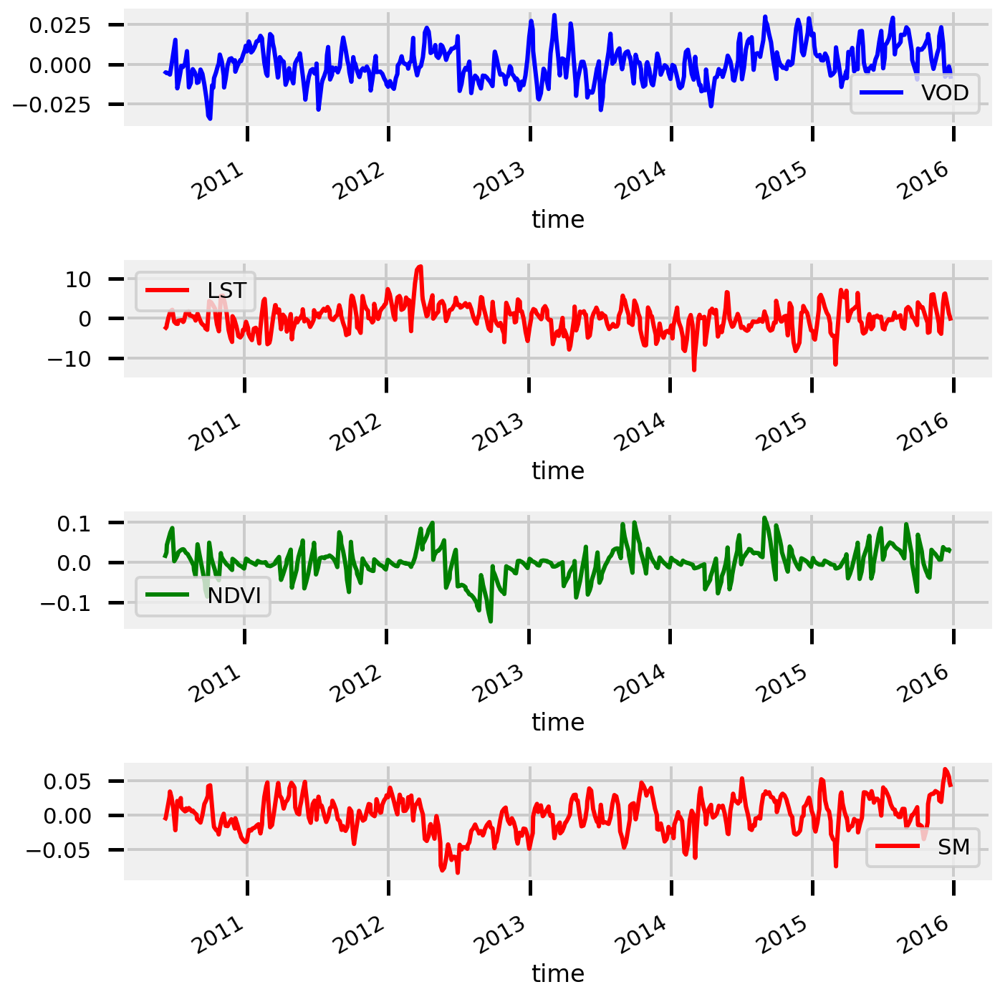
AutoCorrelation (Self)¶
def autocorrelation(x: np.ndarray, symmetric: bool=True) -> np.ndarray:
"""Computes the autocorrlation of a signal
Parameters
----------
x : np.ndarray
the input array, shape=(n_samples,)
symmetric : bool, default=True
whether to return the symmetric or not
Returns
-------
auto_corr : np.ndarray
the autocorrelation, shape=(n_samples,) or
shape=(n_samples/2,) if symmetric is True
"""
# remove the sample mean
x -= np.mean(x)
# compute lags
n_samples = x.shape[0]
lags = compute_lags(x)
# compute cross correlation
auto_corr = np.correlate(x, x, mode="full")
# normalize by the zero-lag value
auto_corr /= auto_corr[n_samples - 1]
if symmetric:
return auto_corr[n_samples-1:], lags[n_samples-1:]
else:
return auto_corr, lags
def compute_lags(x):
"""compute the lags"""
return np.arange(-x.shape[0] + 1, x.shape[0])
Cross Correlation¶
def cross_correlation(x: np.ndarray, y: np.ndarray, symmetric: bool=True) -> np.ndarray:
"""Computes the Autocorrelation between two signals
Parameters
----------
x : np.ndarray
the input array
y : np.ndarray
the input array
Returns
-------
cross_corr : np.ndarray
the autocorrelation, shape=(n_samples,) or
shape=(n_samples/2,) if symmetric is True
"""
np.testing.assert_equal(x.shape, y.shape)
# remove the sample mean
x -= np.mean(x)
y -= np.mean(y)
# compute lags
n_samples = x.shape[0]
lags = compute_lags(x)
# compute cross correlation
cross_cov = np.correlate(x, y, mode="full")
cross_corr = cross_cov / (n_samples * np.std(x) * np.std(y))
if symmetric:
return cross_corr[n_samples-1:], lags[n_samples-1:]
else:
return cross_corr, lags
def plot_crosscorr(ds, xlabel: str="Days"):
fig, ax = plt.subplots(nrows=2, ncols=2, figsize=(10,10))
ds.VOD.plot(ax=ax[0,0], color="blue")
ax[0,0].set(
ylabel="Correlation Coefficient", title="VOD Auto Corr.",
xticklabels=[], xlabel=""
)
ds.LST.plot(ax=ax[0,1], color="red")
ax[0,1].set(
ylabel="", title="VOD vs Land Surface Temperature",
xticklabels=[], xlabel=""
)
ds.NDVI.plot(ax=ax[1,0], color="green")
ax[1,0].set(
xlabel=xlabel, ylabel="Correlation Coefficient", title="VOD vs NDVI"
)
ds.SM.plot(ax=ax[1,1], color="orange")
ax[1,1].set(
xlabel=xlabel, ylabel="", title="VOD vs Soil Moisture",
)
plt.show()
return None
# drop nans
crosscorr_variables = demo_subset_interp_rolling.dropna(dim="lat").dropna(dim="lon")
demo_subset_interp_rolling
<xarray.Dataset>
Dimensions: (lat: 251, lon: 480, time: 526)
Coordinates:
* time (time) datetime64[ns] 2010-05-30 2010-06-01 ... 2015-12-30
* lat (lat) float64 36.39 36.44 36.49 36.54 ... 48.74 48.79 48.84 48.89
* lon (lon) float64 -104.5 -104.4 -104.4 -104.3 ... -80.64 -80.59 -80.54
Data variables:
SMADI (lat, lon, time) float64 nan nan nan nan nan ... nan nan nan nan
LST (lat, lon, time) float64 nan nan nan 303.7 ... nan nan nan nan
NDVI (lat, lon, time) float64 nan nan nan 0.3437 nan ... nan nan nan nan
VOD (lat, lon, time) float64 nan -0.01049 0.03474 ... nan nan nan
SM (lat, lon, time) float64 nan nan nan 0.007536 ... nan nan nan nanxarray.Dataset
- lat: 251
- lon: 480
- time: 526
- time(time)datetime64[ns]2010-05-30 ... 2015-12-30
array(['2010-05-30T00:00:00.000000000', '2010-06-01T00:00:00.000000000', '2010-06-04T00:00:00.000000000', ..., '2015-12-22T00:00:00.000000000', '2015-12-25T00:00:00.000000000', '2015-12-30T00:00:00.000000000'], dtype='datetime64[ns]') - lat(lat)float6436.39 36.44 36.49 ... 48.84 48.89
array([36.385107, 36.435121, 36.485135, ..., 48.788552, 48.838566, 48.88858 ])
- lon(lon)float64-104.5 -104.4 ... -80.59 -80.54
array([-104.489512, -104.439505, -104.389499, ..., -80.636199, -80.586193, -80.536186])
- SMADI(lat, lon, time)float64nan nan nan nan ... nan nan nan nan
array([[[nan, nan, nan, ..., nan, nan, nan], [nan, nan, nan, ..., nan, nan, nan], [nan, nan, nan, ..., nan, nan, nan], ..., [nan, nan, nan, ..., nan, nan, nan], [nan, nan, nan, ..., nan, nan, nan], [nan, nan, nan, ..., nan, nan, nan]], [[nan, nan, nan, ..., nan, nan, nan], [nan, nan, nan, ..., nan, nan, nan], [nan, nan, nan, ..., nan, nan, nan], ..., [nan, nan, nan, ..., nan, nan, nan], [nan, nan, nan, ..., nan, nan, nan], [nan, nan, nan, ..., nan, nan, nan]], [[nan, nan, nan, ..., nan, nan, nan], [nan, nan, nan, ..., nan, nan, nan], [nan, nan, nan, ..., nan, nan, nan], ..., ... ..., [nan, nan, nan, ..., nan, nan, nan], [nan, nan, nan, ..., nan, nan, nan], [nan, nan, nan, ..., nan, nan, nan]], [[nan, nan, nan, ..., nan, nan, nan], [nan, nan, nan, ..., nan, nan, nan], [nan, nan, nan, ..., nan, nan, nan], ..., [nan, nan, nan, ..., nan, nan, nan], [nan, nan, nan, ..., nan, nan, nan], [nan, nan, nan, ..., nan, nan, nan]], [[nan, nan, nan, ..., nan, nan, nan], [nan, nan, nan, ..., nan, nan, nan], [nan, nan, nan, ..., nan, nan, nan], ..., [nan, nan, nan, ..., nan, nan, nan], [nan, nan, nan, ..., nan, nan, nan], [nan, nan, nan, ..., nan, nan, nan]]]) - LST(lat, lon, time)float64nan nan nan 303.7 ... nan nan nan
array([[[ nan, nan, nan, ..., 273.92146556, 273.76569027, nan], [ nan, nan, nan, ..., 273.21827087, 273.14004415, nan], [ nan, nan, nan, ..., 274.49430532, 273.82296878, nan], ..., [ nan, nan, nan, ..., nan, nan, nan], [ nan, nan, nan, ..., nan, nan, nan], [ nan, nan, nan, ..., nan, nan, nan]], [[ nan, nan, nan, ..., 274.22486918, 274.01064528, nan], [ nan, nan, nan, ..., 274.41563944, 273.72986335, nan], [ nan, nan, nan, ..., 273.30529144, 272.40062632, nan], ... [ nan, nan, nan, ..., nan, nan, nan], [ nan, nan, nan, ..., nan, nan, nan], [ nan, nan, nan, ..., nan, nan, nan]], [[ nan, nan, nan, ..., 261.69022522, 258.18089091, nan], [ nan, nan, nan, ..., 261.31866557, 258.10333049, nan], [ nan, nan, nan, ..., 262.08733571, 259.18066966, nan], ..., [ nan, nan, nan, ..., nan, nan, nan], [ nan, nan, nan, ..., nan, nan, nan], [ nan, nan, nan, ..., nan, nan, nan]]]) - NDVI(lat, lon, time)float64nan nan nan 0.3437 ... nan nan nan
array([[[nan, nan, nan, ..., nan, nan, nan], [nan, nan, nan, ..., nan, nan, nan], [nan, nan, nan, ..., nan, nan, nan], ..., [nan, nan, nan, ..., nan, nan, nan], [nan, nan, nan, ..., nan, nan, nan], [nan, nan, nan, ..., nan, nan, nan]], [[nan, nan, nan, ..., nan, nan, nan], [nan, nan, nan, ..., nan, nan, nan], [nan, nan, nan, ..., nan, nan, nan], ..., [nan, nan, nan, ..., nan, nan, nan], [nan, nan, nan, ..., nan, nan, nan], [nan, nan, nan, ..., nan, nan, nan]], [[nan, nan, nan, ..., nan, nan, nan], [nan, nan, nan, ..., nan, nan, nan], [nan, nan, nan, ..., nan, nan, nan], ..., ... ..., [nan, nan, nan, ..., nan, nan, nan], [nan, nan, nan, ..., nan, nan, nan], [nan, nan, nan, ..., nan, nan, nan]], [[nan, nan, nan, ..., nan, nan, nan], [nan, nan, nan, ..., nan, nan, nan], [nan, nan, nan, ..., nan, nan, nan], ..., [nan, nan, nan, ..., nan, nan, nan], [nan, nan, nan, ..., nan, nan, nan], [nan, nan, nan, ..., nan, nan, nan]], [[nan, nan, nan, ..., nan, nan, nan], [nan, nan, nan, ..., nan, nan, nan], [nan, nan, nan, ..., nan, nan, nan], ..., [nan, nan, nan, ..., nan, nan, nan], [nan, nan, nan, ..., nan, nan, nan], [nan, nan, nan, ..., nan, nan, nan]]]) - VOD(lat, lon, time)float64nan -0.01049 0.03474 ... nan nan
array([[[ nan, -0.01048832, 0.03474003, ..., 0.11760811, nan, nan], [ nan, -0.01881196, 0.02423516, ..., 0.11001083, nan, nan], [ nan, -0.02477263, 0.01487345, ..., 0.10489749, nan, nan], ..., [ nan, nan, nan, ..., nan, nan, nan], [ nan, nan, nan, ..., nan, nan, nan], [ nan, nan, nan, ..., nan, nan, nan]], [[ nan, 0.00681139, 0.05073513, ..., 0.13126412, nan, nan], [ nan, -0.00306419, 0.03953355, ..., 0.12272568, nan, nan], [ nan, -0.00963154, 0.0294984 , ..., 0.11703958, nan, nan], ... [ nan, nan, nan, ..., nan, nan, nan], [ nan, nan, nan, ..., nan, nan, nan], [ nan, nan, nan, ..., nan, nan, nan]], [[ nan, -0.03027876, -0.01419487, ..., 0.158495 , 0.13041798, nan], [ nan, -0.03402265, -0.01630186, ..., 0.15871367, 0.13080134, nan], [ nan, -0.03624752, -0.01813529, ..., 0.15796797, 0.12994209, nan], ..., [ nan, nan, nan, ..., nan, nan, nan], [ nan, nan, nan, ..., nan, nan, nan], [ nan, nan, nan, ..., nan, nan, nan]]]) - SM(lat, lon, time)float64nan nan nan ... nan nan nan
array([[[nan, nan, nan, ..., nan, nan, nan], [nan, nan, nan, ..., nan, nan, nan], [nan, nan, nan, ..., nan, nan, nan], ..., [nan, nan, nan, ..., nan, nan, nan], [nan, nan, nan, ..., nan, nan, nan], [nan, nan, nan, ..., nan, nan, nan]], [[nan, nan, nan, ..., nan, nan, nan], [nan, nan, nan, ..., nan, nan, nan], [nan, nan, nan, ..., nan, nan, nan], ..., [nan, nan, nan, ..., nan, nan, nan], [nan, nan, nan, ..., nan, nan, nan], [nan, nan, nan, ..., nan, nan, nan]], [[nan, nan, nan, ..., nan, nan, nan], [nan, nan, nan, ..., nan, nan, nan], [nan, nan, nan, ..., nan, nan, nan], ..., ... ..., [nan, nan, nan, ..., nan, nan, nan], [nan, nan, nan, ..., nan, nan, nan], [nan, nan, nan, ..., nan, nan, nan]], [[nan, nan, nan, ..., nan, nan, nan], [nan, nan, nan, ..., nan, nan, nan], [nan, nan, nan, ..., nan, nan, nan], ..., [nan, nan, nan, ..., nan, nan, nan], [nan, nan, nan, ..., nan, nan, nan], [nan, nan, nan, ..., nan, nan, nan]], [[nan, nan, nan, ..., nan, nan, nan], [nan, nan, nan, ..., nan, nan, nan], [nan, nan, nan, ..., nan, nan, nan], ..., [nan, nan, nan, ..., nan, nan, nan], [nan, nan, nan, ..., nan, nan, nan], [nan, nan, nan, ..., nan, nan, nan]]])
def body(x,y ):
print(x.shape, y.shape)
if np.isnan(np.sum(x)) or np.isnan(np.sum(x)):
return np.nan * np.ones(x.shape[0])
else:
ac, _ = cross_correlation(x.values, y.values, True)
return ac
f = xr.apply_ufunc(
body,
demo_subset_interp_rolling.LST,
demo_subset_interp_rolling.VOD,
input_core_dims=[["lat", "lon"], ["lat", "lon"]],
output_core_dims=[["lat", "lon"]],
# exclude_dims=set(("time",)),
vectorize=True
)
(251, 480) (251, 480)
---------------------------------------------------------------------------
ValueError Traceback (most recent call last)
<ipython-input-126-1d929131ba0f> in <module>
9
10
---> 11 f = xr.apply_ufunc(
12 body,
13 demo_subset_interp_rolling.LST,
~/.conda/envs/isp_data/lib/python3.9/site-packages/xarray/core/computation.py in apply_ufunc(func, input_core_dims, output_core_dims, exclude_dims, vectorize, join, dataset_join, dataset_fill_value, keep_attrs, kwargs, dask, output_dtypes, output_sizes, meta, dask_gufunc_kwargs, *args)
1126 # feed DataArray apply_variable_ufunc through apply_dataarray_vfunc
1127 elif any(isinstance(a, DataArray) for a in args):
-> 1128 return apply_dataarray_vfunc(
1129 variables_vfunc,
1130 *args,
~/.conda/envs/isp_data/lib/python3.9/site-packages/xarray/core/computation.py in apply_dataarray_vfunc(func, signature, join, exclude_dims, keep_attrs, *args)
269
270 data_vars = [getattr(a, "variable", a) for a in args]
--> 271 result_var = func(*data_vars)
272
273 if signature.num_outputs > 1:
~/.conda/envs/isp_data/lib/python3.9/site-packages/xarray/core/computation.py in apply_variable_ufunc(func, signature, exclude_dims, dask, output_dtypes, vectorize, keep_attrs, dask_gufunc_kwargs, *args)
722 )
723
--> 724 result_data = func(*input_data)
725
726 if signature.num_outputs == 1:
~/.conda/envs/isp_data/lib/python3.9/site-packages/numpy/lib/function_base.py in __call__(self, *args, **kwargs)
2111 vargs.extend([kwargs[_n] for _n in names])
2112
-> 2113 return self._vectorize_call(func=func, args=vargs)
2114
2115 def _get_ufunc_and_otypes(self, func, args):
~/.conda/envs/isp_data/lib/python3.9/site-packages/numpy/lib/function_base.py in _vectorize_call(self, func, args)
2185 """Vectorized call to `func` over positional `args`."""
2186 if self.signature is not None:
-> 2187 res = self._vectorize_call_with_signature(func, args)
2188 elif not args:
2189 res = func()
~/.conda/envs/isp_data/lib/python3.9/site-packages/numpy/lib/function_base.py in _vectorize_call_with_signature(self, func, args)
2240 if outputs is None:
2241 for result, core_dims in zip(results, output_core_dims):
-> 2242 _update_dim_sizes(dim_sizes, result, core_dims)
2243
2244 if otypes is None:
~/.conda/envs/isp_data/lib/python3.9/site-packages/numpy/lib/function_base.py in _update_dim_sizes(dim_sizes, arg, core_dims)
1840 num_core_dims = len(core_dims)
1841 if arg.ndim < num_core_dims:
-> 1842 raise ValueError(
1843 '%d-dimensional argument does not have enough '
1844 'dimensions for all core dimensions %r'
ValueError: 1-dimensional argument does not have enough dimensions for all core dimensions ('dim0', 'dim1')
crosscorr_variables
<xarray.Dataset>
Dimensions: (lat: 0, lon: 480, time: 526)
Coordinates:
* time (time) datetime64[ns] 2010-05-30 2010-06-01 ... 2015-12-30
* lat (lat) float64
* lon (lon) float64 -104.5 -104.4 -104.4 -104.3 ... -80.64 -80.59 -80.54
Data variables:
SMADI (lat, lon, time) float64
LST (lat, lon, time) float64
NDVI (lat, lon, time) float64
VOD (lat, lon, time) float64
SM (lat, lon, time) float64 xarray.Dataset
- lat: 0
- lon: 480
- time: 526
- time(time)datetime64[ns]2010-05-30 ... 2015-12-30
array(['2010-05-30T00:00:00.000000000', '2010-06-01T00:00:00.000000000', '2010-06-04T00:00:00.000000000', ..., '2015-12-22T00:00:00.000000000', '2015-12-25T00:00:00.000000000', '2015-12-30T00:00:00.000000000'], dtype='datetime64[ns]') - lat(lat)float64
array([], dtype=float64)
- lon(lon)float64-104.5 -104.4 ... -80.59 -80.54
array([-104.489512, -104.439505, -104.389499, ..., -80.636199, -80.586193, -80.536186])
- SMADI(lat, lon, time)float64
array([], shape=(0, 480, 526), dtype=float64)
- LST(lat, lon, time)float64
array([], shape=(0, 480, 526), dtype=float64)
- NDVI(lat, lon, time)float64
array([], shape=(0, 480, 526), dtype=float64)
- VOD(lat, lon, time)float64
array([], shape=(0, 480, 526), dtype=float64)
- SM(lat, lon, time)float64
array([], shape=(0, 480, 526), dtype=float64)
crosscorr_variables = demo_subset_interp_rolling.dropna(dim="lat").dropna(dim="lon")
def body(x,y ):
# print(x.shape, y.shape)
# print(type(x), type(y))
if np.isnan(np.sum(x)) or np.isnan(np.sum(y)):
nans = np.ones(x.shape[0])
nans.fill(np.nan)
return nans
else:
ac, _ = cross_correlation(x, y, True)
return ac
f = xr.apply_ufunc(
body,
crosscorr_variables.LST,
crosscorr_variables.VOD,
input_core_dims=[["time", ], ["time"]],
output_core_dims=[["time"]],
exclude_dims=set(("time",)),
vectorize=True
)
---------------------------------------------------------------------------
ValueError Traceback (most recent call last)
<ipython-input-146-92f16c61582a> in <module>
15
16
---> 17 f = xr.apply_ufunc(
18 body,
19 crosscorr_variables.LST,
~/.conda/envs/isp_data/lib/python3.9/site-packages/xarray/core/computation.py in apply_ufunc(func, input_core_dims, output_core_dims, exclude_dims, vectorize, join, dataset_join, dataset_fill_value, keep_attrs, kwargs, dask, output_dtypes, output_sizes, meta, dask_gufunc_kwargs, *args)
1126 # feed DataArray apply_variable_ufunc through apply_dataarray_vfunc
1127 elif any(isinstance(a, DataArray) for a in args):
-> 1128 return apply_dataarray_vfunc(
1129 variables_vfunc,
1130 *args,
~/.conda/envs/isp_data/lib/python3.9/site-packages/xarray/core/computation.py in apply_dataarray_vfunc(func, signature, join, exclude_dims, keep_attrs, *args)
269
270 data_vars = [getattr(a, "variable", a) for a in args]
--> 271 result_var = func(*data_vars)
272
273 if signature.num_outputs > 1:
~/.conda/envs/isp_data/lib/python3.9/site-packages/xarray/core/computation.py in apply_variable_ufunc(func, signature, exclude_dims, dask, output_dtypes, vectorize, keep_attrs, dask_gufunc_kwargs, *args)
722 )
723
--> 724 result_data = func(*input_data)
725
726 if signature.num_outputs == 1:
~/.conda/envs/isp_data/lib/python3.9/site-packages/numpy/lib/function_base.py in __call__(self, *args, **kwargs)
2111 vargs.extend([kwargs[_n] for _n in names])
2112
-> 2113 return self._vectorize_call(func=func, args=vargs)
2114
2115 def _get_ufunc_and_otypes(self, func, args):
~/.conda/envs/isp_data/lib/python3.9/site-packages/numpy/lib/function_base.py in _vectorize_call(self, func, args)
2185 """Vectorized call to `func` over positional `args`."""
2186 if self.signature is not None:
-> 2187 res = self._vectorize_call_with_signature(func, args)
2188 elif not args:
2189 res = func()
~/.conda/envs/isp_data/lib/python3.9/site-packages/numpy/lib/function_base.py in _vectorize_call_with_signature(self, func, args)
2254 # did not call the function even once
2255 if otypes is None:
-> 2256 raise ValueError('cannot call `vectorize` on size 0 inputs '
2257 'unless `otypes` is set')
2258 if builtins.any(dim not in dim_sizes
ValueError: cannot call `vectorize` on size 0 inputs unless `otypes` is set
f.mean(dim="time").plot()
<matplotlib.collections.QuadMesh at 0x7ff93c95e7c0>
# drop nans
crosscorr_variables = demo_pixel_interp_rolling.dropna(dim="time")
# small hack to make it a single output function
def body(x):
ac, _ = cross_correlation(x.values, crosscorr_variables.VOD.values, True)
return ac
# compute autocorr for each of the variables
ds = crosscorr_variables.map(body)
/home/emmanuel/.conda/envs/isp_data/lib/python3.9/site-packages/numpy/core/fromnumeric.py:3419: RuntimeWarning: Mean of empty slice.
return _methods._mean(a, axis=axis, dtype=dtype,
/home/emmanuel/.conda/envs/isp_data/lib/python3.9/site-packages/numpy/core/_methods.py:188: RuntimeWarning: invalid value encountered in double_scalars
ret = ret.dtype.type(ret / rcount)
---------------------------------------------------------------------------
ValueError Traceback (most recent call last)
<ipython-input-65-ec8a076d0b2e> in <module>
9
10 # compute autocorr for each of the variables
---> 11 ds = crosscorr_variables.map(body)
~/.conda/envs/isp_data/lib/python3.9/site-packages/xarray/core/dataset.py in map(self, func, keep_attrs, args, **kwargs)
4768 if keep_attrs is None:
4769 keep_attrs = _get_keep_attrs(default=False)
-> 4770 variables = {
4771 k: maybe_wrap_array(v, func(v, *args, **kwargs))
4772 for k, v in self.data_vars.items()
~/.conda/envs/isp_data/lib/python3.9/site-packages/xarray/core/dataset.py in <dictcomp>(.0)
4769 keep_attrs = _get_keep_attrs(default=False)
4770 variables = {
-> 4771 k: maybe_wrap_array(v, func(v, *args, **kwargs))
4772 for k, v in self.data_vars.items()
4773 }
<ipython-input-65-ec8a076d0b2e> in body(x)
5 # small hack to make it a single output function
6 def body(x):
----> 7 ac, _ = cross_correlation(x.values, crosscorr_variables.VOD.values, True)
8 return ac
9
<ipython-input-63-46aba32d2084> in cross_correlation(x, y, symmetric)
26
27 # compute cross correlation
---> 28 cross_cov = np.correlate(x, y, mode="full")
29 cross_corr = cross_cov / (n_samples * np.std(x) * np.std(y))
30
<__array_function__ internals> in correlate(*args, **kwargs)
~/.conda/envs/isp_data/lib/python3.9/site-packages/numpy/core/numeric.py in correlate(a, v, mode)
744 """
745 mode = _mode_from_name(mode)
--> 746 return multiarray.correlate2(a, v, mode)
747
748
ValueError: object too deep for desired array
# combine the years
plot_crosscorr(ds, "Lag (Years)")
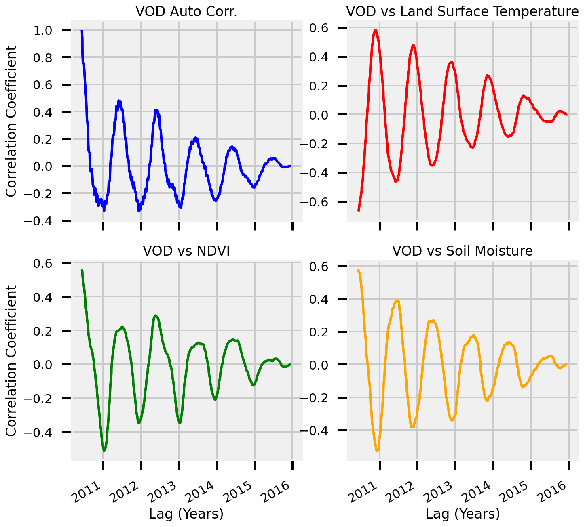
Groupby Years¶
# drop nans
crosscorr_variables = demo_pixel_interp_rolling.dropna(dim="time")
# copy the data array
crosscorr_variables = crosscorr_variables.copy()
# groupby year
crosscorr_variables = crosscorr_variables.groupby("time.year")
datasets = []
# loop through different years
for iyear, i_dataset in crosscorr_variables:
# small hack to make it a single output function
def body(x):
ac, _ = cross_correlation(x.values, i_dataset.VOD.values, True)
return ac
# map each of the autocorrelations over each of the variables
i_dataset = i_dataset.map(body)
# append the dataset to the list
datasets.append(i_dataset)
# merge the datasets
ds = xr.merge(datasets)
# combine the years
plot_crosscorr(ds, "Lag (Years)")
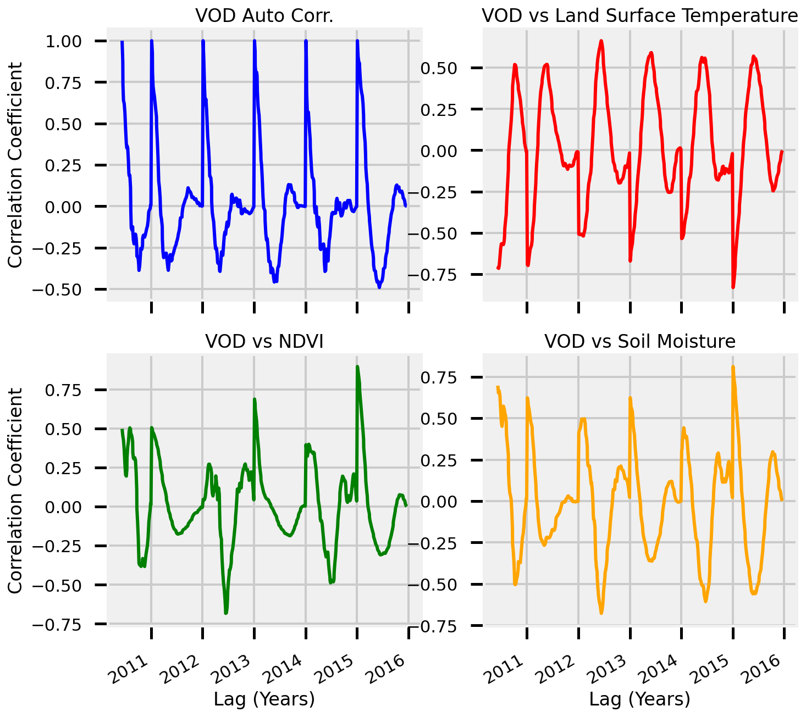
View Monthly¶
# combine the years
plot_crosscorr(ds.groupby("time.month").mean(), "Lag (Months)")
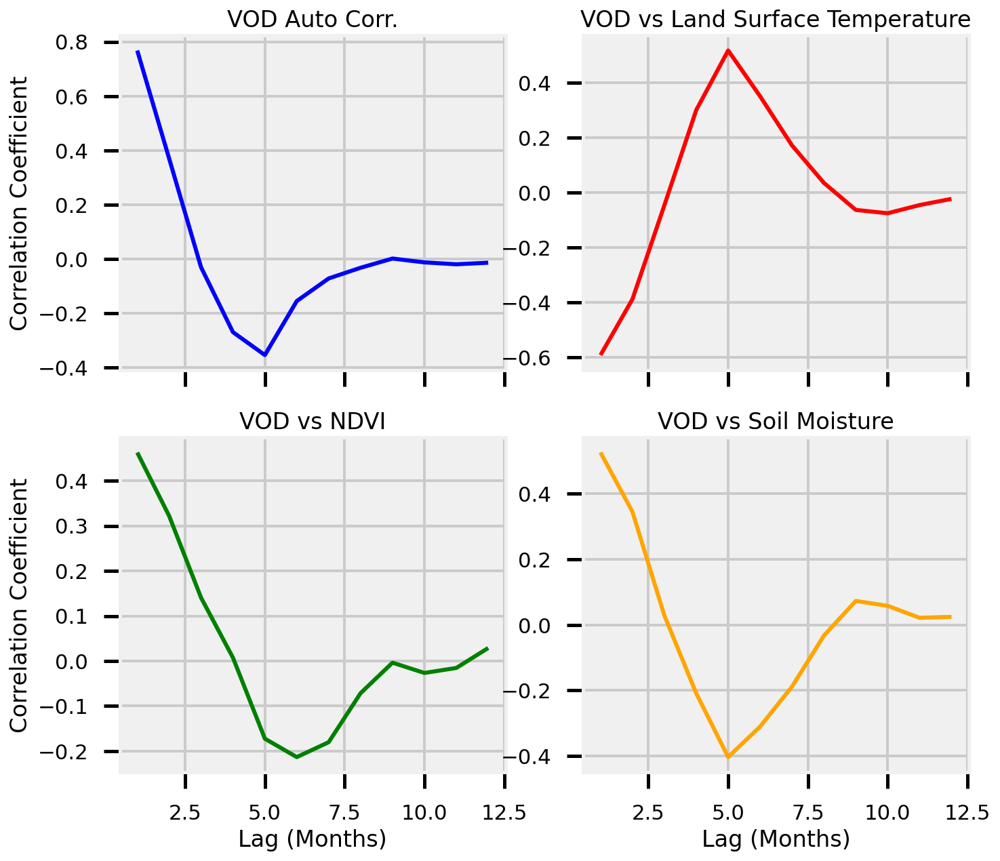
View Daily (per month)¶
# combine the years
plot_crosscorr(ds.groupby("time.day").mean(), "Lag (Days)")
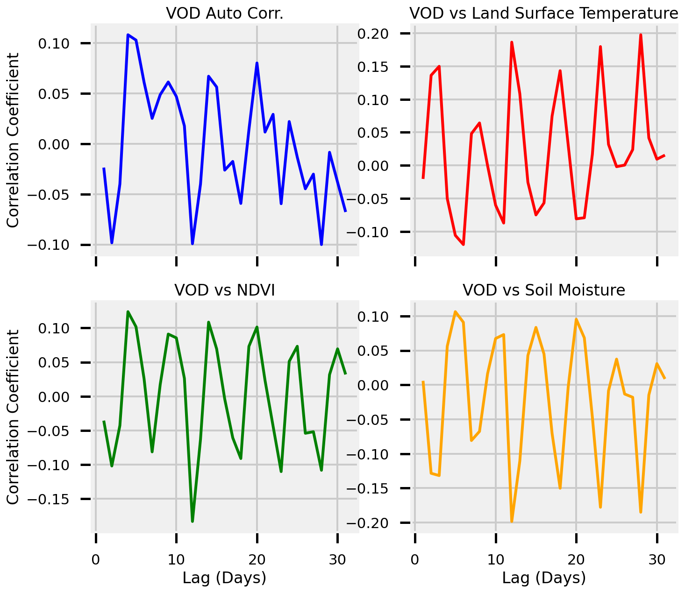
Cross Correlation - Anomalies¶
# drop nans
crosscorr_variables = demo_pixel_anomalies.dropna(dim="time")
# small hack to make it a single output function
def body(x):
ac, _ = cross_correlation(x.values, crosscorr_variables.VOD.values, True)
return ac
# compute autocorr for each of the variables
ds = crosscorr_variables.map(body)
# combine the years
plot_crosscorr(ds, "Lag (Years)")
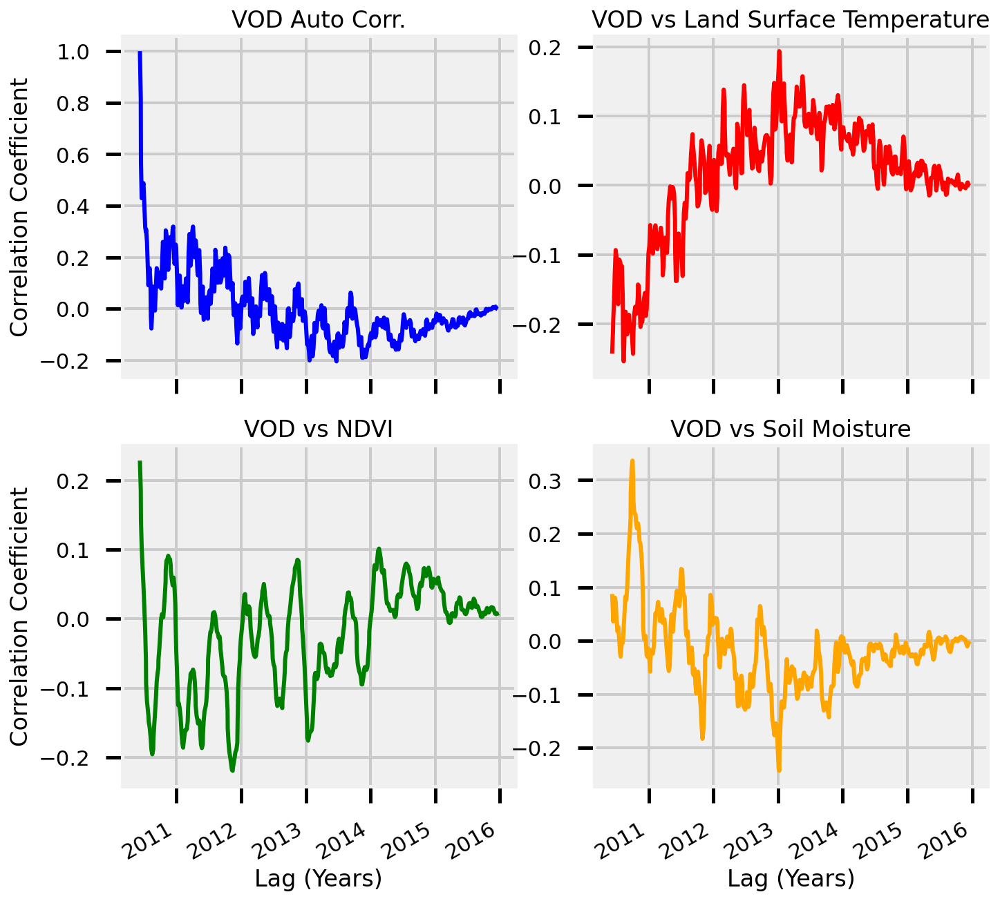
Groupby Years¶
# drop nans
crosscorr_variables = demo_pixel_anomalies.dropna(dim="time")
# copy the data array
crosscorr_variables = crosscorr_variables.copy()
# groupby year
crosscorr_variables = crosscorr_variables.groupby("time.year")
datasets = []
# loop through different years
for iyear, i_dataset in crosscorr_variables:
# small hack to make it a single output function
def body(x):
ac, _ = cross_correlation(x.values, i_dataset.VOD.values, True)
return ac
# map each of the autocorrelations over each of the variables
i_dataset = i_dataset.map(body)
# append the dataset to the list
datasets.append(i_dataset)
# merge the datasets
ds = xr.merge(datasets)
# combine the years
plot_crosscorr(ds, "Lag (Years)")
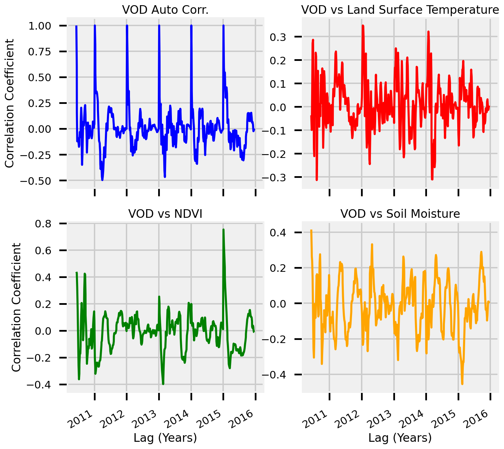
Average Per Year - By Month¶
# combine the years
plot_crosscorr(ds.groupby("time.month").mean(), "Lag (Months)")
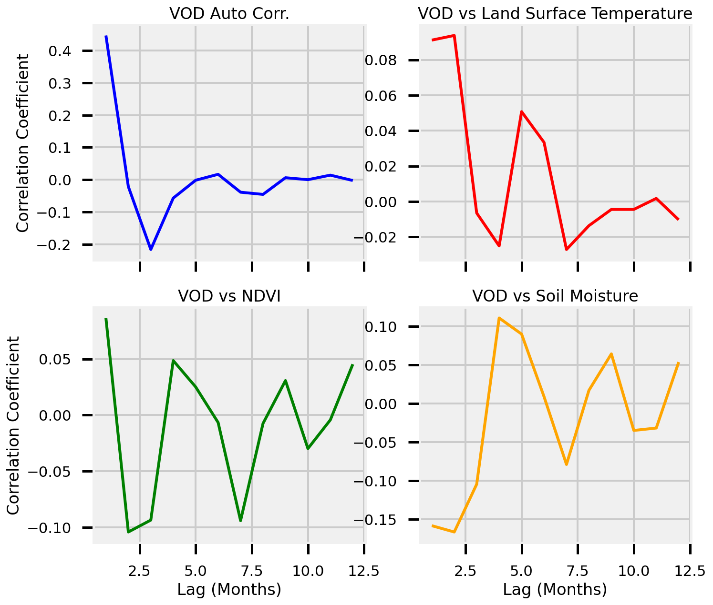
Average Per Year - By Day¶
# combine the years
plot_crosscorr(ds.groupby("time.day").mean(), "Lag (Days)")
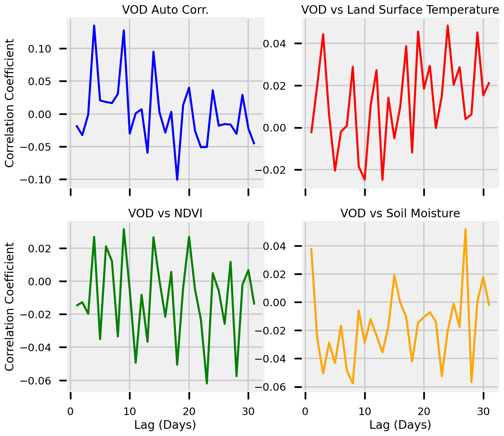